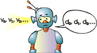

Do
we have to know what is AI? This question can be easily answered: Yes,
if we want to find it then our task will be a lot easier if we know what
is the thing we are looking for. Failing to define AI, our position will
not differ from that of the Alchemists who sought for the Philosopher's
stone but almost had no idea what they were searching for.
The most widely spread definition
of AI is the so called Turing's test. Alan Turing was a British mathematician
famous for the invention of the theoretical Turing machine and for the
deciphering of the German codes during World War II.
The Turing's test is quite simple.
We place something behind a curtain and it speaks with us. If we can't
make difference between it and a human being then it will be AI. However,
this definition exists from more than fifty years, so we are going to create
a newer and a more up-to-date one.
Turing's definition suggests that,
an Intellect is a person with knowledge gained through the years. If this
is so, then what about a newly born baby? Is it an Intellect? Our answer
will be "yes". Our definition of an intellect will be: a thing that knows
nothing but it can learn. At this point we differ from most people who
imagine a university professor when they hear the word Intellect.
Before giving a formal definition
of AI we will make it clear that we accept the thesis of Church, stating
that every calculating device can be modelled by a program. This means
that we are going to look for AI in the set of programs. We will suppose
that AI is a step device living in a kind of world. At each step it receives
information (from the world) and influences (at the world) by the information
it works out. Also, we will assume that the information received and worked
out at each step will be a finite amount. Let's say it gets n
bits and works out m bits.
After this clarification we can
state informally our definition. AI will be such a program which in an
arbitrary world will cope not worse than a human.
The next task will be to formalise this definition
in order to use it and to search for AI with it. First, what is a world
for us? These will be two functions World(s, d)
and View(s).
|
The first will take as arguments the state of the world and the influence
that our device has on the world at this step. As a result, this function
will return the new state of the world (which it will obtain on the next
step). The second function will inform us what does our device see. An
argument of this function will be the world's state and the returned value
will be the information that the device will receive (at a given step).
Also, we have to add one s0.
It will be the world's state when our device was born. During its life
the world will go through the states s0,
s1,
s2,
... . The device will influence the world with the information it
works out at each step d0,
d1,
d2,
... . Also, AI will receive information from the world v0,
v1,
v2,
... . It is clear that si+1=World(si
, di) and
vi=View(si).

We have everything up to this moment.
We have a world and a device that lives in it. However, there is one thing
missing - the meaning of life. What is life without pain and joy, a philosopher
would say. That is why we will introduce meaning of life. This will be
an evaluation to tell us whether one row v0,
v1,
v2,
... is better than another.
Most people think that they have
spent their life better if they have seen more Swiss resorts and less coal-mines.
More or less our definition of the meaning of life will be the same. We
will pick out two bits from vi
and
call them victory and loss. The aim will be to get more victories
and fewer losses.
The last step will be to make an algorithm
that will discover AI. The idea is to start all programs on all worlds
and to take those which cope best. This does not sound as an algorithm,
it is as if we are going to make a never-ending exam with an infinite number
of candidates. The problem is not the infinite number of the candidates,
we do not need all of them but only a part from those who have passed the
exam. The real problem is that the exam will never end even for a single
candidate.
|